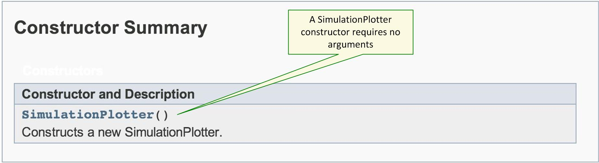
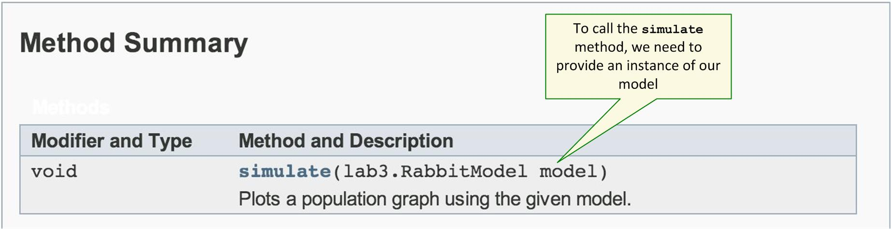

The Rabbit Simulator
The reason it's important for RabbitModel to carefully follow the specification is that it will now be used by an existing class named SimulationPlotter that will plot a graph of the population according to your model. If the model doesn't follow the spec, the plotter won't work, the system will be a failure, your spouse will gamble away your life savings and all your children will grow up to be drug addicts.
JAR Files
You will not actually get the source code for the SimulationPlotter class. Instead, you will download and import a JAR file (Java ARchive) that contains the compiled code for the class. (This is an extremely common way of distributing Java libraries and applications.)
To download and import the JAR file, follow these steps. This part is exactly the same as importing a specchecker.
- Download
rabbits.jarand save it somewhere convenient that is NOT inside yourproject3directory. - Right-click on your
project3project directory in Eclipse and select Import, expand General, select File System, and click Next. - Browse to the directory where you saved
rabbits.jarand hit OK. - Check the box next to
rabbits.jarin the right pane, and click Finish. - Right-click on
rabbits.jarin Eclipse's Package Explorer, select Build Path, and select Add to Build Path. - The
SimulationPlotterclass will now be available to you in your lab 3 code.
Putting It Together
The jar file rabbits.jar doesn't contain a main method, so you can't "run" it as we did for the speccheckers. You'll need to write a main method in which you create
an instance of SimulationPlotter and provide it an instance of your model so that the simulator can do its work.
Create a new class called RabbitSimApp with a main method.
To figure out how to use the SimulationPlotter in your main method, take a look at the
Javadoc documentation.
As with most Java objects, in order to use a SimulationPlotter we first have to construct one. The documentation shows there is just one constructor,
not requiring any arguments:

So, in the main method, we need to put in the line:
SimulationPlotter plotter = new SimulationPlotter();In order to start the simulation and see the results plotted, we need to call the plotter's
simulate method:

The simulate method requires us to provide an argument which is an instance of our RabbitModel:
RabbitModel myModel = new RabbitModel(); plotter.simulate(myModel);We will also need an
import statement at the top of the file (after the package declaration), since the SimulationPlotter is in a different package:
import plotter.SimulationPlotter;
Verify that the simple model and your main method work okay. In adding a single rabbit to the population each year, you should see a straight line plotted by the simulator. If the plotter output is not correct, go back to the previous page and see the section, "Unit testing the model".